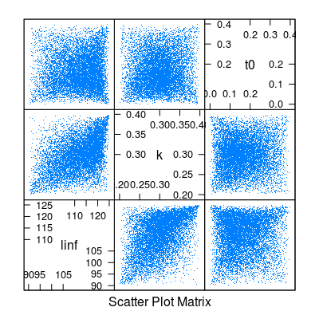

mvrtriangle
Usage
"mvrtriangle"(n = 1, object, ...)
Arguments
- n
- the number of iterations
- mu
- an
a4aGrobject
Value
-
an
a4aGr object with n iterations
Description
Method to generate multivariate parameters with elliptical copulas and triangular marginals for a4aGr objects.
Details
The method is essentially a special case of mvrcop, where the copula is of type "ellipCopula" and family "t", and where the marginals are triangular.
Examples
# Set up the a4aGr object and parameters for the marginals mm <- matrix(NA, ncol=3, nrow=3) diag(mm) <- c(50, 0.001,0.001) mm[upper.tri(mm)] <- mm[lower.tri(mm)] <- c(0.1,0.01,0.00004) vbObj <- a4aGr(grMod=~linf*(1-exp(-k*(t-t0))), grInvMod=~t0-1/k*log(1-len/linf), params=FLPar(linf=58.5, k=0.086, t0=0.001, units=c("cm","yr^-1","yr")), vcov=mm, distr="norm") pars <- list(list(a=50, b=100, c=58.5), list(a=0.06, b=0.2, c=0.086), list(a=0, b=0.005, c=0.001)) # Apply mvrtriangle... vbObj1 <- mvrtriangle(10000, vbObj, paramMargins=pars) splom(data.frame(t(params(vbObj1)@.Data)), pch=".")
#...and compare with mvrcop vbObj2 <- mvrcop(10000, vbObj, copula="ellipCopula", family="t", param=0, margins="triangle", paramMargins=pars) splom(data.frame(t(params(vbObj2)@.Data)), pch=".")